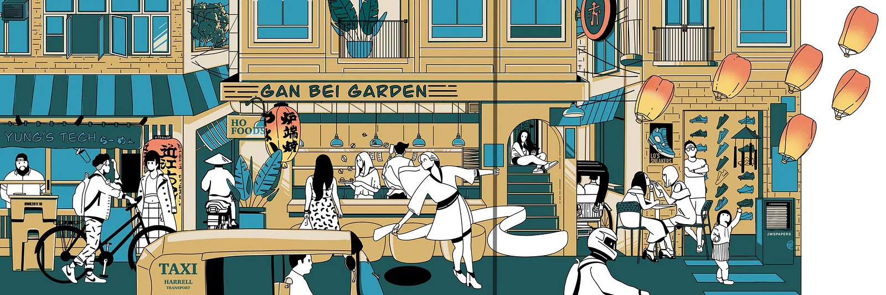
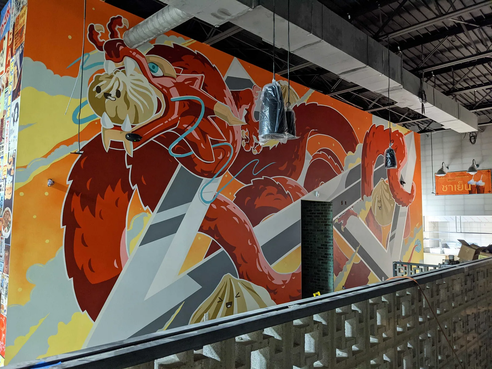

Adam Smajstrla
Close


Next: Dumplings and Dragons mural
Mural
Designed for
Gan Bei
Gan Bei garden mural
Mural
Add a short description of this project.
Project Hail Mary patch
Previous project
Brand, Mural
Dumplings and Dragons mural
Next project
Gan Bei garden mural
Close